| 友嘉机床操作面板 |
| 返回<<< |
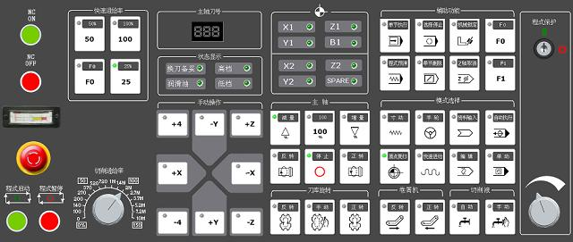
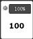
快速进给率100%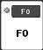
预备功能键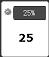
快速进给率25%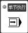
单节执行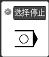
选择停止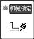
机械锁定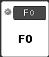
预备功能键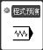
程式预演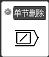
单节删除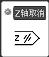
Z轴取消 预备空白键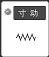
寸动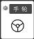
手轮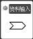
资料输入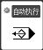
自动执行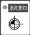
原点复归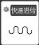
快速进给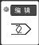
编辑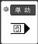
单动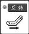
反转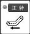
正转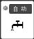
自动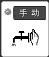
手动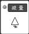
主轴减量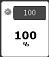
主轴100%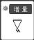
主轴增量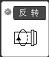
主轴反转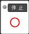
主轴停止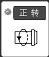
主轴正转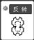
刀库反转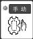
手动旋转刀库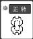
刀库正转NC程序启动
NC程序停止
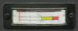 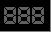 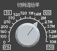
紧急停止
程式启动
程式暂停
状态显示：换刀备妥/高档/润滑油/低档
第一原点指示灯 第二原点指示灯
程式保护
手动转速